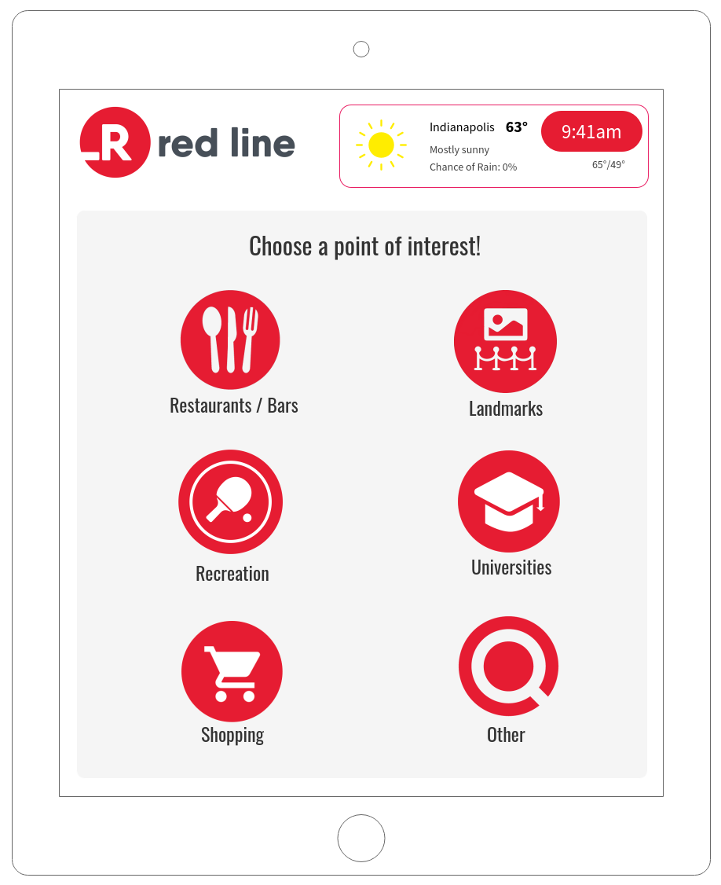
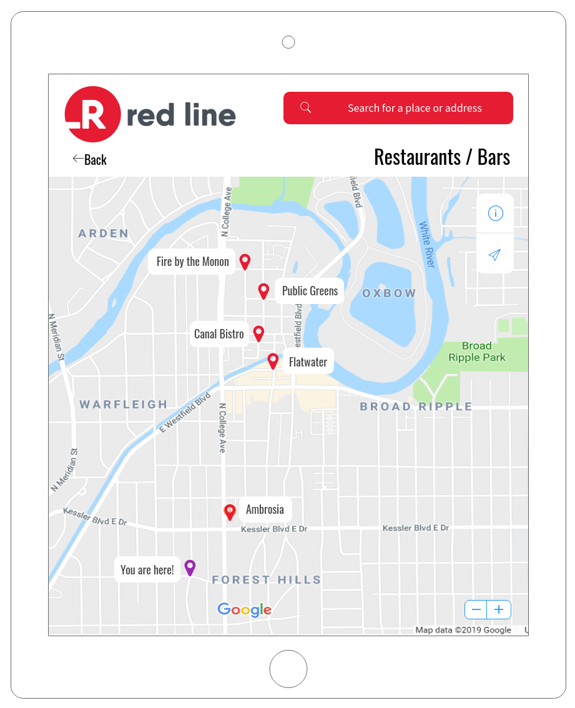
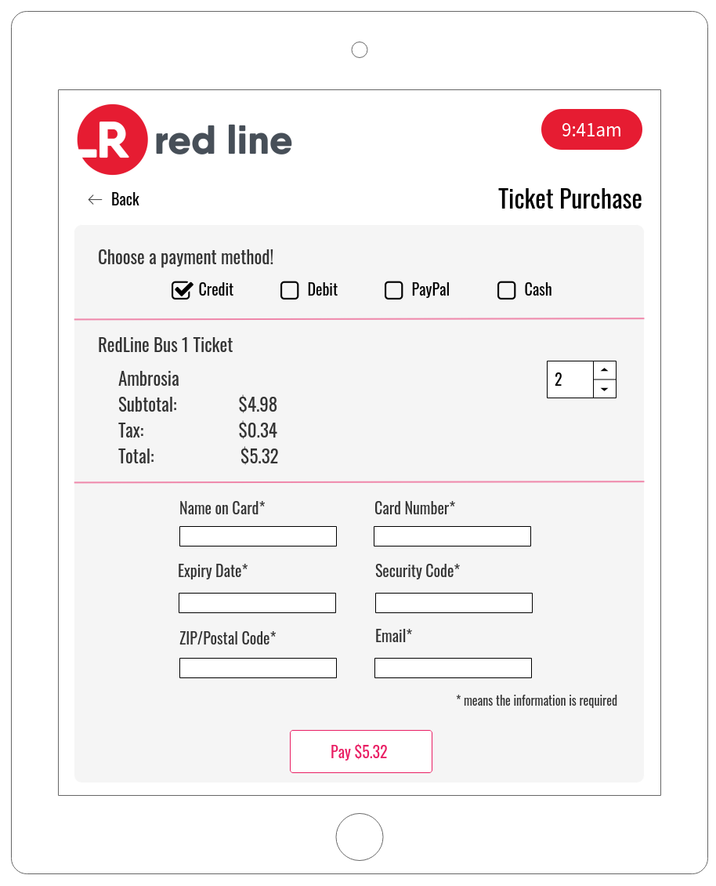
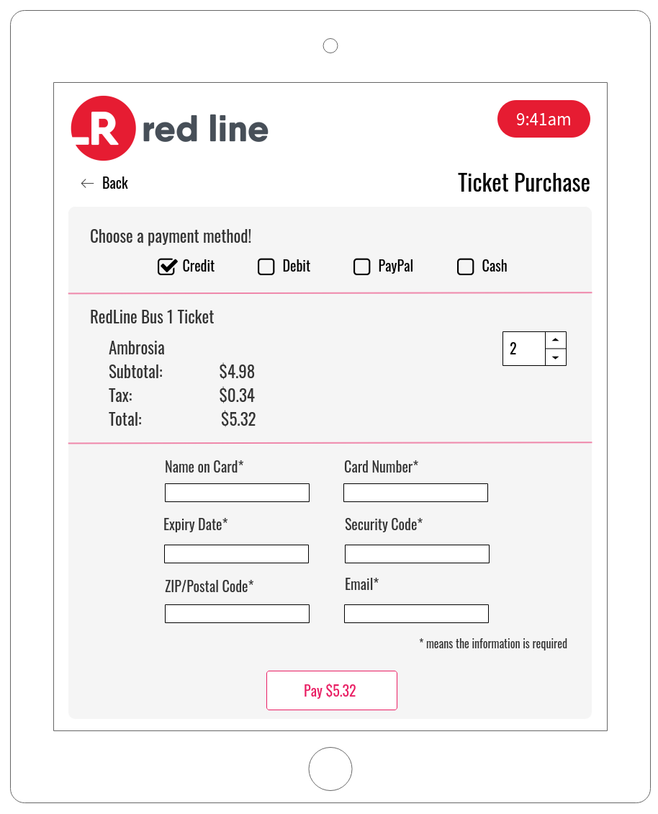

Red Line App
HCI Final Course Project, 2019
A wireframe of an application using Mockflow.com. The Red Line is a new bus system that runs from downtown Indy to the University of Indianapolis. This fictional app was designed to enhance the user experience, allow them to search points of interests, and buy tickets. It features a map, search bar, info cards with star reviews, and multiple payment methods.
  
